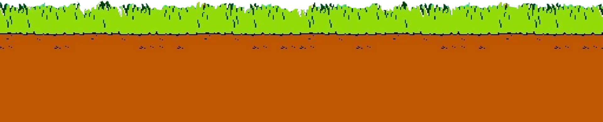

Back



Time : 0
Score : 0
Stage 1
Console
Handheld
Console
อุปกรณ์สำหรับอ่านค่าและส่งภาพ และเสียงจากสื่อบันทึก เช่นแผ่นซีดี, ดีวีดี, ตลับ ไปยังหน้าจอ โดยผู้เล่นสามารถบังคับแสงได้ผ่านตัวควบคุม(คอลโทรลเลอร์)หรือ จอย
Handheld
เครื่องพกพา จะมีขนาดเล็กประกอบไปด้วย หน้าจอ ลำโพง และส่วนควบคุมโดยผู้ใช้งานจะสามารถพกพา และเล่นได้ทุกที่ทีต้องการ
1st Generation 1972 - 1976
เครื่อง Magnavox Odyssey
ผู้ผลิต MAGNAVOX (America 1917)
วันวางจำหน่าย สิงหาคม 1972
ยอดขาย 350,000 เครื่อง
เกมคอนโซลเครื่องแรกของโลกที่ว่าจำหน่ายครั้งแรกที่ อเมริกา ในปี 1972 ถูกออกแบบและสร้างโดยทีมเล็ก ๆ ที่นำโดยคุณ Ralph H. Baer นักประดิษฐ์นักพัฒนาเกมและวิศวกรชาวอเมริกันเชื้อสายเยอรมันเชื้อสายยิว
Explore
Back
2nd generation 1977 - 1982
เครื่อง Atari 2600
ผู้ผลิต Atari (America 1972)
วันวางจำหน่าย 11 สิงหาคม 1977
ยอดขาย 30 ล้านเครื่อง
เครื่องเล่นเกมคอนโซลยุคแรกที่สามารถพบเห็นได้ในประเทศไทยในอดีต และยังสามารถหาซื้อได้อยู่ในปัจจุบัน โดยเกมที่ปรากฏจะเป็นเกมที่นำมาจากตู้เกมอาเขตในยุคนั้น ๆ เช่น battle city, space invader หรือเกมยอดฮิตอย่าง Pac – man
Explore
Back
Pac - man
เกมกินจุดในอดีตที่ยังโด่งดังมาจนถึงปัจจุบันที่สร้างมาเพื่อให้โลกรู้ว่า เกมไม่จำเป็นจะต้องนำเสนอแต่ความรุนแรง นอกจากนั้นยังเพื่อเจาะกลุ่มลูกค้าที่เป็นผู้หญิง
รู้หรือไม่ ?
การต่อสู้ที่เป็นการกินของ Pacman นั้นมีแรงบันดาลใจมาจากความชื่นชอบการกินของคุณภรรยาของผู้สร้างเกม
ต้นแบบของผีในเกม Pacman
ผีในเกมเเพคเเมนมีต้นแบบมาจากการ์ตูน
ผีน้อยคิวทาโร่
Ms. Pac - man
แพคแมน แต่เป็นผู้หญิงที่พัฒนาเกมการเล่นจากเดิมโดยได้รับการยอมรับจากผู้สร้างเกมต้นฉบับและยกให้เป็นเกมออริจินอลของทีมสร้าง มิสแพคแมนเอง
Popeye
เกมที่สร้างจากการ์ตูน popeye จากปี 1919 โดยจะมีทั้งหมด 3 ด่าน สามารถซ้ำหลังจากการเคลียร์เกมครั้งแรกได้โดยจะมีความยากและท้าทายที่มากขึ้น
Space Invader
เกมยิง 2 มิติจากตู้อาเขตที่ได้รับความนิยมมากในยุคนั้น และมีเกมเลียนแบบออกมามากมายหลายยุคหลายสมัย
3rd generation 1983 - 1989
เครื่อง Nintendo Entertainment System หรือ NES หรือ Famicom
ผู้ผลิต Nintendo (Japan 1977)
วันวางจำหน่าย (JP) 15 กรกฎาคม 1983 / (NA) 18 ตุลาคม 1985
ยอดขาย 61.91 ล้านเครื่อง
Nintendo ได้เปิดตัว Famicom (Family Computer) ครั้งแรกที่ประเทศญี่ปุ่นในปี 1983 พร้อมกับการแจ้งเกิดของเกม platform ระดับตำนานอย่าง Super Mario Brother หรือเรียกกันสั้น ๆ ว่า mario จนกลายมาเป็นสัญลักษณ์ของบริษัทในปัจจุบัน และในปี 1985 Nintendo เปิดขายเครื่อง famicom ในประเทศอเมริกา ในชื่อ NES และยังเป็นการทำให้เกิดปรากฎการณ์เกมคอนโซล ที่ทำให้คนทั่วโลกได้รู้จักวิดิโอเกม และเกมคอนโซล
Play!
Back
4th generation 1989 - 1992
เครื่อง Super Nintendo Entertainment System หรือ SNES หรือ Super Famicom
ผู้ผลิต Nintendo (Japan 1977)
วันวางจำหน่าย (JP) 21 พฤศจิกายน 1990 / (NA) 23 สิงหาคม 1991
ยอดขาย 49.10 ล้านเครื่อง
ในปี 1990 Nintendo ก็ได้เปิดตัว SNES หรือ Super famicom เครื่องเล่นเกม 16 บิตของตัวเองโดยในนำภาคต่อของเกมดัง ๆ ของตัวเองมาลงให้กับเครื่อง เช่น Fanal Fantasy IV, Dargon Quest V Rockman X ทั้งยังนำเกมต่อสู่ที่ดังมาก ๆ ในยุคนั้นอย่าง Street Fighter II มาในขณะที่เครื่องเกมอื่นทำไม่ได้อีกด้วย
Explore
เครื่อง Mega Drive (jp) หรือ Sega Genesis(us)
ผู้ผลิต SEGA (Japanese multinational 1982)
วันวางจำหน่าย (JP) 29 ตุลาคม 1988 / (NA) 14 สิงหาคม 1989
ยอดขาย 30.75 ล้านเครื่อง
เริ่มเข้าสู่ยุค 16 บิต ทำให้เกมคอนโซลมีพัฒนาการด้านภาพและเสียงที่ดีขึ้นอย่างเห็นได้ชัดเจน และในยุคนี้ SEGA ก็เป็นเจ้าแรกที่เปิดตัวด้วยเครื่องเกมใหม่อย่าง genesis และเกมชูโรงใหม่อย่าง sonic the hedgehog หรือเรียกกันติดปากว่า โซนิคเจ้าเม่นสายฟ้า
Explore
เครื่อง NEO GEO
ผู้ผลิต SNK Corporation (Japan 1978)
วันวางจำหน่าย (JP) 26 เมษายน 1990 / (NA) 22 สิงหาคม 1990
ยอดขาย 1 ล้านเครื่อง
เครื่องที่นำเกมอาเขตยอดนิยมของค่าย SNK มาลงในเครื่องเกมคอนโซล อย่าง (1991) FATAL FURY, (1992) ART OF FIGHTING, (1993) SAMURAI SHOWDOWN, (1994) KING OF FIGHTER ในประเทศไทยสามารถพบให้ได้บ่อยในยุคนั้นตามร้านเกมเนื่องจากทั้งตัวเครื่องเกม และตลับมาราคาที่สูงมากเมื่อเทียบกับเครื่องอื่น ๆ
Explore
Back
The Legend of Zelda
เกมผจญภัยโลกแฟนตาซีธีมผู้กล้าปราบจอมมารช่วยเจ้าหญิง ของพระเอกเอลฟ์หนุ่มผู้โชคร้ายที่ผู้เล่นหลาย ๆ คนคิดว่าชื่อ เซลด้า แต่ที่จริงแล้วเขามีชื่อว่า ลิงค์ โดยผู้สร้างได้ออกมาให้ ความหมายว่า ต้องการให้ผู้เล่นรู้สึกได้ ลิงค์ เชื่อมต่อกับโลกของเกม
Megaman
เกมยิงแพลตฟอร์มที่เป็นมาสคอสหลักของบริษัท Capcom โดย Megaman ที่มีเอกลักษณะโดดเด่นที่ปืนยิงพลังงานอย่าง Megabuster ที่มือข้างซ้าย
Sonic the hedgehog
เกมแพลตฟอร์ม 2 มิติ ที่ว่าด้วยการตู่สู้ของเจ้าเม่นสีฟ้าชื่อ โซนิค กับนักวิทยาศาสตร์ผู้ชั่วร้าย เอ๊กแมน
Super Mario Kart
เกมมาริโอในรูปแบบการแข่งรถโกคาร์ท โดยจะมีตัวละครจากซีรีย์เกมมาริโอให้เลือกเล่น ตั้งแต่มาริโอ ลุยจิ เจ้าหญิงพีช และแม้กระทั่งบอสที่ทุกคนคุ้นชินอย่าง บาวเซอร์
Metal Slug
หนึ่งเกมยิงแพลตฟอร์มยอดนิยม คุณอาจได้ยินอีกชื่อหนึ่งก็คือ ทหารจิ๋ว ในเกมคุณจะเหล่าทหารเดินเท้า จักรกลสงคราม ผีดิบซอมบี้ ไปจนถึงเอเลียน โดยเกมยังมาพร้อมกับเหล่า พาวเวอร์อัพที่มาพร้อมกับเสียงที่ติดหู
5th generation 1993 - 1996
เครื่อง PlayStation
ผู้ผลิต Sony (JP multinational 1946)
วันวางจำหน่าย (JP) 3 สิงหาคม 1994 / (NA) 9 กันยายน 1995
ยอดขาย 102.49 ล้านเครื่อง
จุดเริ่มต้นของคลื่นลูกใหญ่ที่ทำให้วงการเกมคอนโซลต้องสั่นสะเทือนจากอดีตจนถึงปัจจุบัน เมื่อ Sony มาเข้าร่วมวงการเกมคอนโซล หลังจากโปรเจคการร่วมมือระหว่าง Sony และ Nintendo ที่ถูกยกเลิกไป Sony จึงได้เปิดตัวเครื่องเกมคอนโซลของตัวเองที่มีการนำเสนอเกมด้วย โมเดลโพลิกอน 3 มิติเต็มรูปแบบ ทำให้เกิดการเปลี่ยนแปลงครั้งสำคัญของวงการเกมอย่างมากจากภาพเกม 2 มิติ สู่ 3 มิติ เเละมีเปิดตัวเกมใหม่ Resident Evil, Silent Hill, Tekken
Explore
เครื่อง Nintendo 64
ผู้ผลิต Nintendo (Japan 1977)
วันวางจำหน่าย (JP) 23 มิถุนายน 1996 / (NA)29 กันยายน 1996
ยอดขาย 32.93 ล้านเครื่อง
การกลับมาของ Nintendo โดนยังคงยึดเอกลักษณ์เดิมของตัวเองในการใช้สื่อบันทึกข้อมูลอย่างตลับ โดยให้เหตุผลว่า ซีดีนั้นบันทึกข้อมูลได้มากกว่าก็จริง แต่จะมีหน้าโหลดเวลาเข้าฉากต่าง ๆ ซึ่งทาง Nintendo มองว่ามันไม่ดีต่อประสบการณ์ในการเล่น โดย Nintendo ยังได้เปิดตัวจอยตัวใหม่ที่แปลกตามากในยุคนั้น เพราะมันมีถึง 3 ก้าน และมาพร้อมกับแกนนาลอค ก่อนที่มันจะกลายเป็นต้นแบบให้กับ การออกแบบจอยในยุคปัจจุบันที่จะต้องมีแกนอนาล๊อคด้วย
Explore
เครื่อง 3DO REAL
ผู้ผลิต Matsushita Electric หรือ Panasonic(1918 Japan)
วันวางจำหน่าย (NA) 4 ตุลาคม 1993 / (JP) 20 มีนาคม 1994
ยอดขาย 2 ล้านเครื่อง
3DO REAL สร้างความตื่นตาตื่นใจให้กับวงการเกมคอนโซลในยุคนั้นมากเพราะเป็น เครื่องเล่นเกมแรกที่สามารถนำสื่อบันทึกข้อมูลสมัยใหม่อย่าง ซีดีมาใช้ ทำให้ทั้งภาพ เสียง สี ความสวยงาม มากขึ้นจากยุค 16 บิตมาก
Explore
Back
Doom
เกมยิงมุมมองบุคคลที่หนึ่งหรือ FPS เดินหน้ายิงอย่างเต็มตัวที่ผู้เล่นจะ ได้รับพบเป็นตัวละครยอดมนุษย์ที่ถูกขนานนามว่า Doom slayer ออกบุกเดี๋ยวถล่มปีศาจ จากนรกที่เกมจะโยนศัตรูมาอย่างมืดฟ้ามัวดิน และระบบเกมก็พลักดันให้ผู้เล่นพุ่งเข้าใส่ศัตรู และทำลายทุกอย่างที่ขวางหน้า นอกจากเกมการเล่นที่ดุดันตัวเกมยังมีการทำเพลงประกอบ ที่ให้ผู้เล่นรู้สึกเหมือนกำลังอยู่ใน MV เพลงเมทัลที่มีผู้เล่นเป็นพระเอก
Castlevania : Symphony of the Night
เกมแพลตฟอร์มที่ถูกเรียกติดปากว่าเกมฟาดแส้ มาจากอาวุธหลักที่ตัวละครของผู้เล่นใช้ และยังเป็นเกมแรก ๆ ที่ผู้เล่นสามารถโจมตีได้อย่างอิสระทั้ง 8 ทิศทาง
Harvest Moon: Back to Nature
เกมทำฟาร์ม จีบสาวที่น่าจดจำขวัญใจผู้เล่นเกมตั้งแต่ยุค 90 นอกจากการทำฟาร์มเเละกิจกรรมเสริมต่าง ๆ เเล้วเกมยังมีความลับหลายอย่างซ่อนเอาไว้เช่น
Power Berry ผลไม้เพิ่มพลังที่จะทำให้เราสามารถทำงานได้อย่างต่อเนื่อง
Kappa ตัวกัปปะที่จะโผล่มาในฤดูใบไม้ผลิ หลังเวลา 11 โมง ถ้าเราโยนแตงกวาให้ 3 ลูก กัปปะจะให้ผลไม้วิเศษกับเรา
Spa boiled eggs จากการทำไข่ไปต้มในบ่อน้ำพุร้อน
Resident Evil
เกมยิงซอมบี้มุมกล้องล็อคตามฉากที่ได้แรกบันดาลใจมาจากเกม Alone in the dark ที่นำเสนอความน่ากลัวได้อย่างมีเสน่ห์ทั้งเสียงต่าง ๆ และจังหวะการเปิดตัวศัตรูในเกม
6th generation 1999 - 2001
เครื่อง Playstation2
ผู้ผลิต Sony (JP multinational 1946)
วันวางจำหน่าย (JP) 4 มีนาคม 2000 / (NA) 26 ตุลาคม 2000
ยอดขาย 155 ล้านเครื่อง
Sony ได้สานต่อความสำเร็จด้วยการเปิดตัวของ Playstation2 ที่ทำให้ยอดขายของ Dream Cast หยุดชงักลงไปและในครั้งนี้ Sony ได้เปิดตัวเกมภาคต่อชื่อดังอีกมากมายทั้ง Final Fantasy X, Metal Gear Solid 2, Dragon Quest VIII และมีการเปิดตัวเกมใหม่อย่าง Devil May Cry, Onimusha, God of War โดยส่วนหนึ่งจากความสำเร็จของ Sony ก็มาจากการเลือกใช้สื่อบันทึกข้อมูลอย่าง ดีวีดี ที่สามารถบันทึกข้อมูลได้มากกว่า ซีดีถึง 7 เท่า
Explore
เครื่อง Xbox
ผู้ผลิต Microsoft (American multinational 1975)
วันวางจำหน่าย (NA) 15 พฤศจิกายน 2001 / (JP) 22 กุมภาพันธ์ 2002
ยอดขาย 24 ล้านเครื่อง
ปลายปี 2001 Microsoft ในเปิดตัวเครื่องเกมคอนโซลเครื่องแรกของตัวเอง และประกาศเข้าร่วมสงครามการค้าด้วยการเปิดตัว Xbox เครื่องเกมที่แรงที่สุดในยุคนั้น และมาพร้อมกับฮาร์ดไดร์ในตัวสำหรับบันทึกเกม ทั้งยังเพิ่มบริการออนไลน์อย่าง Xbox Live
Explore
เครื่อง Dream Cast
ผู้ผลิต SEGA (Japanese multinational 1982)
วันวางจำหน่าย (JP) 27 พฤศจิกายน 1998 / (NA) 9 กันยายน 1999
ยอดขาย 9.13 ล้านเครื่อง
เครื่องเกมแรกที่เปิดตัวก่อนใครในยุคนั้นของ SEGA สร้างความฮือฮาให้วงการเกมอย่างมากด้วยการพัฒนาจาก 64 บิต สู่ 128 บิต ทำให้ภาพของเกมมีความสวยงาม ลบเหลี่ยมและมุมของโมเดลสิ่งต่าง ๆ ในเกมได้อย่างมาก
Explore
เครื่อง GameCube
ผู้ผลิต Nintendo (Japan 1977)
วันวางจำหน่าย (JP) 14 กันยายน 2001 / (NA) 18 พฤศจิกายน 2001
ยอดขาย 21.7 ล้านเครื่อง
การกลับมาของ Nintendo หลังจากปล่อยให้ Sony ได้ครองตลาดถึง 1 ปีเต็มและเป็นครั้งแรกที่ Nintendo ยอมเปลี่ยนมาใช้สื่อบันทึกสมัยใหม่อย่างมินิดีวีดี โดยมาพร้อมกับเกมยอดนิยมของตัวเองอย่าง mario และ Zelda และมีการนำเกม Resident evil remake มาลงพิเศษเป็น Excusive ให้กับเครื่อง Gamecube อีกด้วย
Explore
Back
Devil May Cry
เกมที่เกือบจะได้เป็น RE4 แต่ด้วยเกมการเล่นและเนื้อเรื่องจึงทำให้ Devil May Cry กลายเป็นเกมซีรีย์ใหม่ของตัวเองที่เน้นการแอคชัน และความเท่ และเมื่อไม่ต้องผูกมัดกับโลกของ RE ซีรีย์ทำให้ผู้สร้างสามารถใส่จินตนาการพัฒนาและปรังปรุงจนโลกของ Devil May Cry สมบูรณ์และได้กำเนิดตัวละครเอกขวัญใจผู้เล่นอย่าง ดันเต้ และเวอร์จิล บุตรแห่งจอมปีศาจสปาดา
God of War
โล้นซ่าฆ่าเทพล้างสวรรค์ เกมหน้าใหม่ที่เอาใจผู้เล่นสายแอคชันและได้รับผมตอบรับด้านบวกอย่างล้นลาม กับการต่อสู้ที่ถึงใจ การใส่ Quick time event ที่ใส่มาอย่างลงตัวและการต่อสู้กับบอสที่ยิ่งใหญ่แบบไม่เคยมีเกมไหนทำมาก่อน โดยเกมนี้นั้นจะทำให้การโหลดฉากแบบเดิมที่ต้องรอเปลี่ยนไปด้วยการทำเสนอเนื้อเรื่องที่ร้อยเรียงเรื่องราวให้ความรู้สึกเหมือนกำลังอยู่ในภาพยนตร์ฟอร์มยักษ์เลยทีเดียว
Halo: Combat Evolved
เกมยิงมุมมองบุคคลที่ 1 (First Person Shooting)ที่ทำให้โลกได้รู้ว่าเกมยิงที่ดีสำหรับเครื่องคอนโซลควรเป็นอย่างไร
Ōkami
เกมผจญภัยที่นำเสนอเนื้อเรื่อง ภาพและวิธีการเล่นของเกมที่แตกต่างจากเกมในยุคนั้น แม้ทางผู้พัฒนาจะเคยออกมาบอกว่าสาเหตุที่ภาพของเกมเป็นแบบนี้เพราะข้อจำกัดของเทคโนโลยี แต่มันกับกลายเป็นเสน่ห์สุดพิเศษของ Ōkami ไปทันที โดยเกมนี้ นำเสนอพลังพิเศษใน การใช้แปรงพู่กันและน้ำหมึกในการวาดเพื่อใช้พลังพิเศษต่าง ๆ ทั้งการสร้างลม การคืนชีวิตให้เหล่าต้นไม้ เป็นท่าพิเศษในการโมตี การแก้ไขปริศนา
Resident Evil 4
สานต่อตำนานเกมยิงซอมบี้ RE4 นั้นได้พลิกโฉมตัวเองจากมุมกล้องล็อคตามฉากมาเป็นมุมกล้องมุมมองบุคคลที่ 3 หรือ Third Person และสำเสนอสิ่งใหม่อย่างการยิงผ่านหัวไหล่ตัวละคร ซึ่งในครั้งนี้ก็มีได้การกล่าวถึงศัตรูแบบไหนที่ไม่ใช้เชื้อไวรัส แต่เป็นปรสิตยึดร่าง และมีการเพิ่มการกด Quick time event หรือการกดปุ่มในเวลาจำกัดซึ่งทำให้เกมไม่ปลอดภัยแม้กระทั่งระหว่างช่วงการเล่าเนื้อเรื่อง(Cut scene)
Shenmue
เกมโลกเปิด(Open world)ที่เป็นต้นแบบให้เกมโลกเปิดอื่น ๆ ในการพัฒนาต่อยอด โดย Shenmue นั้นมีเนื้อเรื่องที่ว่าด้วยการแก้แค้น ของเด็กหนุ่มนาม Ryo Hazuki ที่เชี่ยวชาญศิลปะการต่อสู้อย่างจูจุสึ ได้กลับไปสู่สำนักของพ่อเขาเพื่อหาสิ่งที่จะนำไปสู่การล้างแค้นคนที่สังหารพ่อของเขาซึ่งคน ๆ นั้นคือ Lan Di โดย Lan Di ได้ขโมยวัตถุลึกลับที่รู้จักกันในชื่อ Dragon Mirror ซึ่ง Ryo ได้ประกาศไว้ว่าจะล้างแค้นให้กับพ่อเขาและจะหยุดยั้ง Lan Di ไว้ให้ได้
7th generation 2004 - 2006
เครื่อง Wii
ผู้ผลิต Nintendo (Foxconn 1974)
วันวางจำหน่าย (JP) 14 กันยายน 2001 / (NA) 18 พฤศจิกายน 2001
ยอดขาย 101.63 ล้านเครื่อง
เรียบง่าย แต่แฝงด้วยความหน้าค้นหา นิยามสั้น ๆ สำหรับเครื่อง Wii โดยมีอุปกรณ์เสริมคือ Wiimote ที่ทำให้การเล่นเกมไม่ใช้แค่การกดปุ่มเพียงอย่างเดียวอีกต่อไป ผู้เล่นสามารถออกท่าทางเพื่อควบคุมการเล่นเกม ทำให้ Nintendo สามารถขยายตลาดไปสู่กลุ่มลูกค้าไม่มากกว่าทุกเครื่องเกมในตอนนั้น มาพร้อมเกมที่เน้นไปในการใช้ความสามารถของ Wiimote เช่น Wiisports, Wiiplay หรือแม้กระทั่ง Mario
Explore
เครื่อง Playstation 3
ผู้ผลิต Sony (JP multinational 1946)
วันวางจำหน่าย (JP) 11 พฤศจิกายน 2006 / (NA) 17 พฤศจิกายน 2006
ยอดขาย 85.9 ล้านเครื่อง
Playstation 3 ได้เปลี่ยนไปใช้สื่อบันทึกข้อมูลอย่างแผ่น blue - ray และยังคงความสามารถในการเล่นแผ่นหนัง blue – ray ผ่านตัวเครื่องในส่วนของเกมได้มีการทำภาคต่อของเกมดังอย่าง God of war 3 และเปิดตัวเองใหม่อย่าง Uncharted
Explore
เครื่อง Xbox 360
ผู้ผลิต Microsoft (American multinational 1975)
วันวางจำหน่าย 15 พฤศจิกายน 2005
ยอดขาย 84.7 ล้านเครื่อง
เจ้าแรกที่เปิดตัวในยุคนี้ พร้อมด้วยจุดเด่นด้านการบริการออนไลน์ที่พัฒนาต่อยอดจากเจนที่แล้ว และการมาของระบบ Achievement ที่จะผู้กับบัญชีผู้ใช้นั้น ๆ แม้จะเป็นยุคของแผ่น blue-ray ที่มีความจุมากกว่าแต่ Xbox เองก็เลือกที่จะใช้ DVD เป็นส่วนใหญ่เรื่องจากขนาดเกมในตอนนั้นยังสามารถเก็บได้เพียงพอในแผ่น DVD
Explore
Back
Wii sport
เกมที่รวมเอาเกมกีฬามาประยุกต์กับการใช้งานคอนโทรเลอร์อย่าง Wiimote ได้อย่างลงตัวโดยมีให้เลือกเล่นตั้งแต่ เทนนิส เบสบอล โบว์ลิ่ง กอล์ฟ และ การชกมวย
Red Dead Redemption
เกมโลกเปิดธีมโลกตะวันตกยุคแดนคาวบอยไร้กฎหมาย ที่กวาดเอาตำแหน่ง Game of the year ในยุคนั้นไปจากหลาย ๆ สำนักรีวิว เกมการเล่น มินิเกม การนำเสนอเนื้อเรี่องดีที่สุดในเกมโลกคาวบอยส์
Uncharted
การเดินทางของตัวเอกมากเสน่ห์นาม นาธาน เดรก ผู้ที่เชื่อว่าเป็นทายาทของนักสำรวจเซอร์ ฟรานซิส เดรก ขณะที่เขาตามหาสมบัติของเมืองเอลโดราโดที่หายไป โดยได้ความช่วยเหลือจากนักข่าว เอเลนา ฟิชเชอร์ และที่ปรึกษา วิกเตอร์ ซัลลิแวน
The Last of Us
เกมแอคชันสอยงขวัญเอาชีวิตรอดในโลกที่ล่มสลายจากการแพร่ระบาดของเชื้อเห็ดราสายพันธุ์คอร์ดิเซปส์ โดยทุกองค์ประกอบของเกมจะทำให้ผู้เล่นรู้สึกผูกพันธ์กับตัวละครทั้งโจ และ เอลลี่ ตลอดการเดินทาง The Last of Us เป็นเกมที่ตัวละครสามารถถ่ายถอดความเป็นมนุษย์ในอย่างสมจริงจนทำให้ผู้เล่นรู้สึกได้ว่าทั้งสองมีชีวิตมีความนึกคิดเป็นของตัวเองจริง ๆ
8th generation 2011 - 2017
เครื่อง Playstation 4
ผู้ผลิต Sony (JP multinational 1946)
วันวางจำหน่าย (NA) 15 พฤศจิกายน 2013 / (JP) 22 กุมภาพันธ์ 2014
ยอดขาย 106 ล้านเครื่อง
Explore
เครื่อง Xbox one
ผู้ผลิต Microsoft (Foxconn 1974)
วันวางจำหน่าย (NA) 22 พฤศจิกายน 2013 / (JP) 4 กันยายน 2014
ยอดขาย 46.9 ล้านเครื่อง
Explore
เครื่อง Nintendo Switch
ผู้ผลิต Nintendo (Foxconn 1974)
วันวางจำหน่าย 3 มีนาคม 2017
ยอดขาย 61.44 ล้านเครื่อง
Explore
Back
The Legend of Zelda: Breath of the Wild
เกมที่ให้ผู้เล่นได้มากกว่าคำว่า คุ้มค่ากว่าทำรอคอย เพราะภาคล่าสุดที่คือทีสุดของ Zelda ทุกภาค ทั้งระบบการต่อสู้ แผนที่ และรายละเอียดเล็ก ๆ น้อย ๆ และการนำเสนอของเกมจะเปลี่ยนไปจากเดิมที่จะต้อง ทำภารกิจเพื่อปลดพื้นที่และเนื้อเรื่องตามลำดับ แต่ในภาคนี้เกมได้ให้อิสระ แลพลักดันผู้เล่นให้ออกสำรวจโลกแห่งไฮรูน จนลืมไปเลยว่าต้องไปช่วยเจ้าหญิง
Animal Crossing : New Horizons
อีกหนึ่งภาคของเกมดูดวิญญาณกับภาพสุดน่ารักที่จะให้คุณหนีความวุ่นวานในชีวิตจริงไปสู่ เกาะแสนสุขที่เปรียบดั่งโลกอีกใบแม้จะอิสระแต่ก็ยังหนีไม่พ้นระบบทุนนิยม ที่อาจจะทำให้เกมในช่วงแรกดูมีข้อจำกัดอยู่บ้าง และเมื่อเวลาพร้อนไปความหลากหลายของเกมก็จะมีมากขึ้นไปด้วย
Marvel's spider-man
การกลับมาของฮีโร่เพื่อนบ้านที่แสนดีอย่าง สไปเดอร์แมนโดยเป็นการเปิดจักรวาลใหม่อีกครั้งของ ปีเตอร์ ปาร์คเกอร์ โดยเป็นการชุบชีวิตให้โลกของสไปเดอร์แมนอีกครั้ง ด้วยเทคโลยีในยุคปัจจุบันที่ก้าวหน้าทำให้การนำเสนอของเกมนี้ออกมาได้อย่างสมจริงทั้งการต่อสู้ และการเดินทางในแบบของไอ้แมงมุม นั้นก็คือการโหนใยไปทั่วเมืองนั่นเอง ทั้งนี้ผู้เล่นสามารถมีปฏิสัมพันธ์กับประชากรชาวเมืองได้อย่างมีชีวิตชีวา ทั้งการทักทางไปจนถึงการของถ่ายรูปคู่เช่นกัน
God of War
5 ปีแห่งการรอคอยและในที่สุดแฟนเกมก็จะได้สานต่อเรื่องเราของนักรบแห่งสปาตาผู้ฆ่าล้างเทพ และเป็นที่ตื่นตาอย่างมากกับมุมใหม่ของ เครโทส ที่ทุกคนจะคุ้นชินกับลุคนักรบเลือดร้อนที่ดุดันมาเป็นพ่อคนที่ใช้ชีวิตอย่างสงบสุข กับครอบครัว โดยเรื่องราวเริ่มต้นที่การจากไปของภรรยาของ เครโทส โดยคำขอสุดท้ายของนางคือการทำขี้เถ้าไปโปรยบนยอดเข้า ที่สูงที่สุดของแดนเหนือนี้ และในการเดินทางนี้ เครโทสต้องเดินทางไปพร้อมกับลูกชายของเขา เอเทรียส โดยตัวเองยังคงรักษา คุณภาพการต่อสู้ที่ดุดันไว้และเพิ่มระบบการต่อสู้แบบและความสามารถแบบใหม่เข้าไป
Ghost of Tsushima
อีกหนึ่งผลงานชั้นยอด ที่ยกเอาตำนานของญี่ปุนอย่างซามูไรมานำเสนอจนคนญี่ปุ่นเองออกมาชื่นชม ว่ามีความเป็นญี่ปุ่นมากกว่าเกมที่ทำโดยคนญี่ปุ่นเองอีก ทั้งยังเกมยังใช้ความเป็นศิลปะผสมผสานกับการเล่นได้อย่างลงตัวและไม่เหมือนใคร ที่โดดเด่นที่สุดคือการให้สายลมนำทางแทนการมี มินิแมพ ให้รกจอ และสายลมยังส่งผลต่อฉากของเกมในขณะนั้นถึงขนาดที่ว่าทุก ๆ ฉากของเกมสามารถเป็นภาพถ่ายที่สวยงามได้เลย
Pokémon Sword and Shield
เกมโปเกม่อน เจน 8 ที่มีการพัฒนาจากภาคเก่า ๆ อย่างเห็นได้ชัดในการตัดข้อเสียต่าง ๆ ในเกมเก่าออกไปทำให้การนำเสนอของเกมตรงประเด็น และกระชัดสามารถข้ามส่วนที่น่าเบื่อของเกมไปได้ และภาคนี้ยังเพิ่มความหลากหลายของโปเกม่อนที่พบเจอในแต่ละอื่นที่ตามวันเวลา และสถาพอากาศด้วย ทำให้ผู้เล่นสามารถเจอโปเกม่อนใหม่ ๆ ได้แม้จะเดินผ่านเส้นทางเดิม และตัดระบบการสุ่มเจอโปเกม่อนในพุ่มหญ้าออกไป โดยผู้เล่นจะสักเหตุเห็นตัวอย่างชัดเจน และที่โดดเด่นที่สุดคือ ระบบ Dynamax ในการต่อสู้ที่จะเป็นการขยายขนาดและพลัง และเปลี่ยนแปลงรูปร่างบางส่วนช่วยเพิ่มสีสันและความตื่นตาในการต่อสู้เป็นอย่างมาก